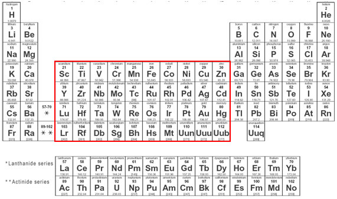

Na tabela periódica, os metais de transição estão localizados entre os grupos 2A e 3A (excluindo estes). São definidos como elementos cujos átomos correspondentes não possuem orbital "d" mais energético totalmente preenchido, ou que são capazes de formar cátions com orbital d incompleto.
Essa classe de elementos se subdivide em duas: a dos metais de transição externa (constituindo o bloco d) e a dos metais de transição interna (constituindo o bloco f). O primeiro metal de transição (seguindo ordem de número atômico) da tabela é o escândio, sendo o último, artificialmente produzido, o unúbio - Uub (hoje conhecido como copernício - Cn), cujo isótopo de maior estabilidade possui meia-vida de 29 segundos.
TABELA PERIÓDICA COMPLETA